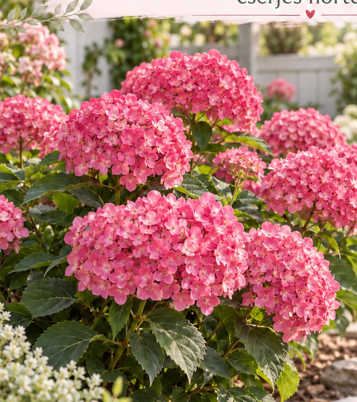

Kriszta Virágműhely · Algyő
A virág, ami nálad él tovább
Saját nevelésű növények, évelők és egynyári virágok a kertedbe és a balkonodra. Nézz körül a kínálatban, és találd meg, mi illik hozzád.

Személyes átvétel Algyőn
A látogatás előtt nézd meg a friss nyitvatartást a Facebookon.
Országos postázás
A szállítási lehetőségeket a rendelési űrlapon találod.